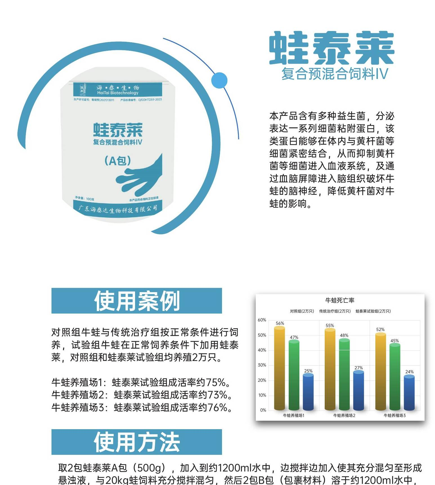

针对牛蛙歪头病（黄杆菌、肺炎克雷伯菌脑神经感染）的细菌粘附蛋白产品，抑制病原菌进入血液与脑组织。对照试验显示成活率约 75%（对照组约 44%）。A ranavirus receptor-binding protein product targeting bullfrog 'wry-neck disease' (Flavobacterium brain-nerve infection). Controlled trials showed a survival rate of approx. 75% (vs. approx. 44% in controls).
来自养殖一线与临床使用的真实效果记录。Real efficacy records from aquaculture farms and clinical use.
牛蛙歪头病（黄杆菌）典型症状，部分蛙体歪头、游动失衡。Typical symptoms of bullfrog wry-neck disease (Flavobacterium): some frogs with head tilt and swimming imbalance.
蛙泰莱（细菌粘附蛋白）按说明拌饲料投喂。WaTaiLei (ranavirus receptor-binding protein) fed mixed into feed per instructions.
蛙泰莱组成活率约 75% / 73% / 76%，死淘率较对照组下降约 50%。WaTaiLei group survival rates approx. 75% / 73% / 76%; mortality/culling rate reduced by approx. 50% versus controls.
成活率约 75%Survival rate ≈ 75%相邻两口蛙池各 10 万只，相同养殖条件。Two adjacent ponds, 100,000 frogs each, under identical farming conditions.
实验组 2 包蛙泰莱 + 600ml 植物油混合，与 20kg 饲料拌匀，每天一餐连续 3 天；间隔一个月再投喂一次连续 3 天。Trial group: 2 packs WaTaiLei + 600 ml vegetable oil mixed with 20 kg feed, one meal daily for 3 consecutive days; repeat once after one month (3 days).
二免后 14 天内：实验组累计死蛙 2033 只，对照组 2526 只，实验组较对照组死亡降低 24.3%。Within 14 days after second immunization: trial group cumulative deaths 2,033 vs control 2,526 — a 24.3% reduction in mortality.
死亡率降低 24.3%Mortality reduced 24.3%江门某牛蛙场，4 万只小四脚牛蛙苗，实验组 vs 对照组各 2 万只，各 100㎡ 网池。A Jiangmen bullfrog farm, 40,000 juvenile bullfrogs; trial vs control, 20,000 each, in 100 m² net pens.
实验组小四脚开始使用，首月连续 3 天，次月连续 3 天，每天一餐。Trial group started at juvenile stage: 3 consecutive days in first month, 3 consecutive days in second month, one meal daily.
成活率实验组 75% vs 对照组 60%；每池节省饲料成本 3824 元，销售额增加 9520 元，ROI 约 11.9 倍。Survival 75% (trial) vs 60% (control); feed cost saved ¥3,824 per pen, sales increased ¥9,520, ROI ≈ 11.9×.
成活率 75% vs 60%，ROI 11.9 倍Survival 75% vs 60%, ROI 11.9×海南万宁某牛蛙场，5.8 万只小四脚牛蛙苗，实验组 vs 对照组各 2.9 万只，各 140㎡ 土池流动水。A Wanning, Hainan bullfrog farm, 58,000 juvenile bullfrogs; trial vs control, 29,000 each, in 140 m² earthen ponds with flow-through water.
实验组首月连续 5 天共 2 包，次月连续 3 天共 4 包，合计 6 包。Trial group: 2 packs over first month (5 days) + 4 packs over second month (3 days), total 6 packs.
养殖 1 月后：死亡率实验组 2.17% vs 对照组 2.60%；实验组皮肤更具光泽、烂皮蛙少、个体差异小、整齐度高。After 1 month: mortality 2.17% (trial) vs 2.60% (control); trial frogs had glossier skin, fewer skin-ulcer cases, smaller individual variation and higher uniformity.
死亡率 2.17% vs 2.60%Mortality 2.17% vs 2.60%选择对应症状，直达推荐产品。Pick a symptom to jump to the recommended product.
2 包 A 包 + 2 包 B 包（双包）配 20kg 蛙饲料。2 Pack A + 2 Pack B (double pack) per 20kg frog feed.
首次连续 3 天，间隔 1 月再用一次（预防性）。First 3 consecutive days, then repeat once after 1 month (preventive).
小四脚蛙苗阶段。At the small four-legged tadpole stage.
蛙泰莱生物制剂（预防，歪头病首选）vs 蛙宝泰抗生素（治疗，急性发作）。WaTaiLei is a biologic (prevention, first choice for wry-neck); WaBaoTai is an antibiotic (treatment, acute outbreaks).
蛙泰莱针对黄杆菌+肺炎克雷伯菌（牛蛙歪头病病原）；蛙泰达针对嗜水气单胞菌+无乳链球菌（红腿/腐皮病原）。两个产品组合使用，覆盖牛蛙主要细菌病。WaTaiLei targets Flavobacterium + Klebsiella pneumoniae (bullfrog wry-neck pathogens); WaTaiDa targets Aeromonas + Streptococcus (red leg / skin ulcer). Used together they cover the main bullfrog bacterial diseases.
黄杆菌入侵脑部致脑膜炎，神经系统严重损伤基本不可逆，所有常用抗生素对该菌耐药率近 100%。治疗只能针对未发病蛙做紧急预防：蛙泰莱+蛙泰达首免 3-5 天，3-4 周后再喂 3 天。Flavobacterium invades the brain causing meningitis; nerve damage is essentially irreversible and resistance to common antibiotics is near 100%. Treat only by emergency prevention of unafflicted frogs: WaTaiLei + WaTaiDa for 3-5 days, repeat 3 days after 3-4 weeks.
一定要当天用完。实在用不完，阴凉干燥处或冷藏保存，但必须避免饲料霉变，否则适得其反。Use the same day; otherwise store cool/dry or refrigerate but avoid mould.
常温阴凉干燥处保存 12 个月，切勿高温暴晒；最佳储存温度 2-8℃（维持生物活性），能冷藏尽量冷藏。12 months cool/dry/shaded; best at 2-8℃.